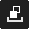

When you first open GameMaker Studio 2, you will be asked
to log in to your YoYo Account (or register for one if you
haven't already - see here).
Once registered and logged in, the main GameMaker Studio 2
IDE will open on the Start Page: 
At the top you can find the general IDE menus which are explained in the following sections of the manual:
Note that there will also appear context specific menu options in the top menu bar, depending on the window that you have focused on currently. For example, if you have the resource tree window in focus then you will have an extra menu item here for "Resources". The rest of the Start Page is explained in the sections below:
When navigating the different sections of the Start Page, clicking
on this will simply take you back to the main page.
On the left of the start page you can see a list of previous projects that you can open. If you mouse over them then you can see the full project name and path, and clicking
The top bar of the Start Page contains a number of links to make navigating easier. They are listed below:
- My Account - sign in to your YoYo Account (see here for more details)
- YoYo Games - takes you to the main YoYo Games website
- Social Media Icons - these take you to the various YoYo Games social media sites where you can keep up to date with news about GameMaker Studio 2
The Projects section is where you can create, open or import projects. You can click New to create a new project, Open to open an existing project or Import to open a GameMaker: Studio 1.4 GMX project file or to open a compressed YYZ GameMaker Studio 2 project file. Both Open and Import will open the file explorer for you to browse to the project file you require.
NOTE: GameMaker Studio 2 is not completely backwards compatible with GameMaker: Studio 1.4 projects but imported 1.4 projects should still run, as obsolete functionality has been recreated for you automatically using compatibility scripts. For full details of the possible issues and the changes made to GML, please see the Help Center article Porting A GMS 1.4 Project To GameMaker Studio 2, as well as the section of the manual on Obsolete Functions.To create a new project simply click the button labelled New to take you to the following screen:
GameMaker Studio 2 permits you to specify what type of project it is that you wish to create, and you can pick and choose based on your coding knowledge or habits. The available options are:
- New Drag and Drop Project: This will create a new project in which the Object Editor (and any other editors that permit code) will be set up to use the GameMaker Studio 2 Drag and Drop interface. For more information on Drag and Drop (DnD™) please see here. Note that this is not an exclusive DnD™ interface, and you can switch between DnD™ and GML code using the right mouse button
.
- New GameMaker Language Project: This will create a project where the default programming is done using the GameMaker Language (GML). You can find more information about GML here. Note that this is not an exclusive GML interface, and you can switch between GML code and DnD™ using the right mouse button
No matter what you select, you will then be prompted to choose a save location for the project and then it will be opened in GameMaker Studio 2.
The information section of the Start Page permits you to browse the YoYo Games Marketplace as well as browse and open Tutorials and Demos made by the YoYo Games team to show off specific aspects of GameMaker Studio 2 (see below for more information).

Tutorials and Demos
When you click on the Tutorials or Demos buttons,
you will be taken to a screen which shows the tutorials/demos that
you own and the Official tutorials/demos that are available for
downloading: 
To download any of the Official tutorials or demos, simply click
on the icon for the one you wish to go through and it will added to
your "Owned" section at the top (note that you may be
required to login to the Marketplace before this can be done). Once
the tutorial or demo is in the "Owned" section, you can mouse over
it and either install it or view the information on it from the
Marketplace: 
Once a tutorial or demo has been installed, it's simply a case
of clicking on it to open it and you will be prompted to provide a
location to save the tutorial project to before the IDE opens for
you to begin. Note that installed tutorials and demos will have an
additional icon  which can be used to uninstall
the project from your computer (this does not remove the
tutorial or demo from your "Owned" list).
which can be used to uninstall
the project from your computer (this does not remove the
tutorial or demo from your "Owned" list).
The tutorials/demos sections of the Start Page also has a couple of buttons to help you better use and navigate your assets:
| Clicking this will refresh the project list from the Marketplace so you can check to see if anything has been updated and get the latest versions. | |
|  | Clicking this will toggle the view between the tutorials or demos you own and those that you have installed. |
Note that while working through a tutorial you can save the project at any time and close the IDE or even change projects without worrying about losing your place, since tutorials will store the page and section that you are currently working through every time you save the project.
It is also worth noting that you can find third party tutorials and demos from the Marketplace too, and once these have been purchased and added to your account they will also appear in the "Owned" section of the appropriate page.